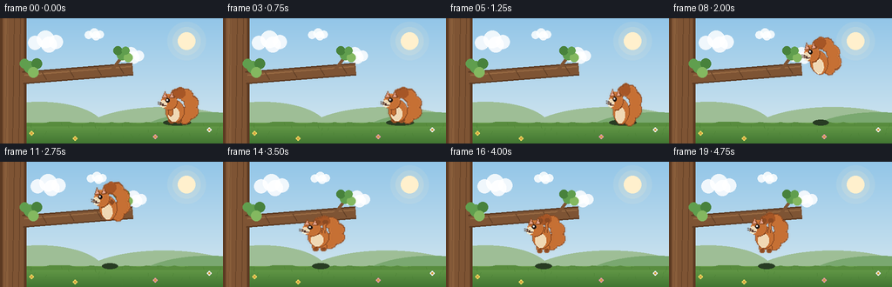
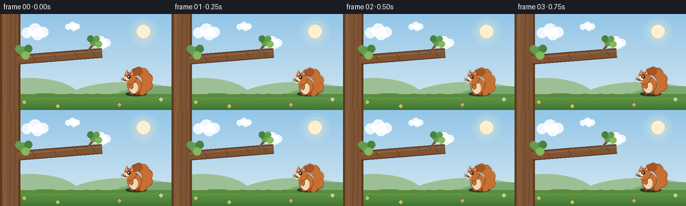

CODING AGENTS AS PIXEL WORLD MODELS
traex/Seed-2.1-Pro-0915 · dynamic_spatial_relationship_0022
点击播放 · 原生 RGB 像素
逐轮保存的候选
回放视频、检查图与代码变化。
每份候选均可单独播放。实际图片检查记录在下方工具轨迹中。
候选 01播放与检查图
点击播放 · 原生 RGB 像素


展开代码变化
--- 上一保存版本
+++ 本次保存版本
@@ -0,0 +1,345 @@
+"""Text-to-video: squirrel on the right of a branch jumps to its bottom.
+
+Renders 20 RGB frames (256x144, 4 fps) with PIL/numpy only. A cartoon squirrel
+idles to the right of a tree branch, leaps along an arc, and ends up hanging
+from the underside of the branch.
+"""
+import math
+import json
+from pathlib import Path
+
+import numpy as np
+from PIL import Image, ImageDraw
+
+import artifact_io
+
+CASE_DIR = Path(__file__).parent
+SPEC = json.loads((CASE_DIR / "task_spec.json").read_text())
+W, H, N, FPS = SPEC["width"], SPEC["height"], SPEC["frames"], SPEC["fps"]
+SS = 2 # supersampling factor for smooth edges
+
+# Palette
+SKY_TOP = (147, 198, 232)
+SKY_BOT = (216, 233, 240)
+SUN = (255, 240, 205)
+CLOUD = (255, 255, 255)
+HILL_FAR = (158, 190, 150)
+HILL_NEAR = (122, 168, 112)
+GROUND_TOP = (104, 158, 74)
+GROUND_BOT = (66, 118, 50)
+BARK = (126, 84, 52)
+BARK_DARK = (92, 58, 34)
+BARK_LIGHT = (158, 112, 72)
+LEAF = (96, 158, 78)
+LEAF_DARK = (72, 130, 60)
+LEAF_LIGHT = (132, 184, 96)
+FUR = (198, 112, 52)
+FUR_DARK = (140, 74, 34)
+FUR_TIP = (166, 86, 38)
+CREAM = (240, 216, 180)
+INNER_EAR = (226, 162, 140)
+EYE = (38, 26, 20)
+NOSE = (96, 52, 44)
+
+
+def smoothstep(t):
+ return t * t * (3 - 2 * t)
+
+
+def lerp(a, b, t):
+ return a + (b - a) * t
+
+
+# --------------------------------------------------------------- background
+def make_background(frame_i):
+ """Static scene with a whisper of cloud drift. Coordinates in design px."""
+ arr = np.zeros((H * SS, W * SS, 3), dtype=np.float32)
+ top = np.array(SKY_TOP, dtype=np.float32)
+ bot = np.array(SKY_BOT, dtype=np.float32)
+ for y in range(H * SS):
+ arr[y, :, :] = top + (bot - top) * (y / (H * SS - 1))
+ img = Image.fromarray(arr.astype(np.uint8), "RGB")
+ d = ImageDraw.Draw(img, "RGBA")
+
+ def s(v):
+ return int(round(v * SS))
+
+ # Soft sun with a faint halo, upper right
+ sx, sy = s(214), s(26)
+ for r, a in ((22, 26), (16, 40), (10, 255)):
+ d.ellipse([sx - s(r), sy - s(r), sx + s(r), sy + s(r)],
+ fill=SUN + (a,))
+
+ # Drifting clouds
+ drift = frame_i * 0.25
+ for cx0, cy, sc in ((52, 26, 1.0), (150, 42, 0.75), (108, 18, 0.55)):
+ cx = cx0 + drift
+ for ox, oy, r in ((-12, 2, 8), (0, -2, 10), (12, 1, 8), (4, 4, 9)):
+ x, y = s(cx + ox * sc), s(cy + oy * sc)
+ rr = s(r * sc)
+ d.ellipse([x - rr, y - rr, x + rr, y + rr], fill=CLOUD + (215,))
+
+ # Distant hills
+ d.ellipse([s(-30), s(96), s(120), s(158)], fill=HILL_FAR + (255,))
+ d.ellipse([s(90), s(102), s(286), s(168)], fill=HILL_FAR + (255,))
+ d.ellipse([s(150), s(108), s(330), s(176)], fill=HILL_NEAR + (255,))
+
+ # Ground with vertical gradient
+ g0 = 120
+ band = np.zeros(((H - g0) * SS, W * SS, 3), dtype=np.float32)
+ gt = np.array(GROUND_TOP, dtype=np.float32)
+ gb = np.array(GROUND_BOT, dtype=np.float32)
+ for y in range((H - g0) * SS):
+ band[y, :, :] = gt + (gb - gt) * (y / ((H - g0) * SS - 1))
+ img.paste(Image.fromarray(band.astype(np.uint8), "RGB"), (0, s(g0)))
+ d = ImageDraw.Draw(img, "RGBA")
+ # Wavy turf lip
+ rng = np.random.default_rng(7)
+ lip = [(0, s(g0))]
+ for x in range(0, W + 4, 8):
+ lip.append((s(x), s(g0) + s(int(rng.integers(-1, 2)))))
+ lip += [(s(W), s(g0)), (s(W), s(g0 + 4)), (0, s(g0 + 4))]
+ d.polygon(lip, fill=(88, 140, 62, 255))
+ # Grass blades
+ rng2 = np.random.default_rng(11)
+ for _ in range(46):
+ x = rng2.integers(2, W - 2)
+ y0 = rng2.integers(g0 + 3, H - 2)
+ d.line([(s(x), s(y0)), (s(x + rng2.integers(-1, 2)), s(y0 - 3))],
+ fill=(74, 128, 52, 200), width=max(1, SS // 2))
+ # Tiny flowers
+ for fx, fy, col in ((36, 132, (236, 214, 96)), (178, 136, (232, 150, 170)),
+ (240, 128, (240, 240, 250)), (86, 138, (236, 214, 96))):
+ for k in range(4):
+ a = k * math.pi / 2
+ d.ellipse([s(fx + math.cos(a) * 1.6) - s(1),
+ s(fy + math.sin(a) * 1.6) - s(1),
+ s(fx + math.cos(a) * 1.6) + s(1),
+ s(fy + math.sin(a) * 1.6) + s(1)],
+ fill=col + (255,))
+ d.ellipse([s(fx) - s(0.8), s(fy) - s(0.8),
+ s(fx) + s(0.8), s(fy) + s(0.8)],
+ fill=(210, 160, 60, 255))
+
+ # Tree trunk on the left
+ d.rectangle([0, 0, s(30), H * SS], fill=BARK_DARK + (255,))
+ d.rectangle([s(3), 0, s(27), H * SS], fill=BARK + (255,))
+ for bx in (8, 16, 23):
+ d.line([(s(bx), 0), (s(bx - 2), H * SS)],
+ fill=BARK_DARK + (160,), width=SS)
+ d.rectangle([s(5), 0, s(9), H * SS], fill=BARK_LIGHT + (90,))
+
+ # Branch: from trunk toward the middle, gently rising
+ p0 = (26, 68)
+ p1 = (152, 58)
+
+ def branch_y(x):
+ return p0[1] + (p1[1] - p0[1]) * (x - p0[0]) / (p1[0] - p0[0])
+
+ d.line([(s(p0[0]), s(p0[1])), (s(p1[0]), s(p1[1]))],
+ fill=BARK_DARK + (255,), width=s(15))
+ d.line([(s(p0[0]), s(p0[1])), (s(p1[0]), s(p1[1]))],
+ fill=BARK + (255,), width=s(12))
+ d.line([(s(p0[0] + 2), s(p0[1] - 3)), (s(p1[0] - 2), s(p1[1] - 3))],
+ fill=BARK_LIGHT + (180,), width=max(1, s(2)))
+ # Bark ticks along the branch
+ for t in (0.2, 0.45, 0.7, 0.9):
+ x = lerp(p0[0], p1[0], t)
+ y = branch_y(x)
+ d.line([(s(x - 3), s(y - 4)), (s(x + 2), s(y + 4))],
+ fill=BARK_DARK + (200,), width=max(1, SS))
+ # Small upward twig near the tip with a leaf tuft
+ d.line([(s(128), s(branch_y(128))), (s(140), s(44))],
+ fill=BARK + (255,), width=s(4))
+ for lx, ly, lr, col in ((140, 42, 6, LEAF), (147, 45, 5, LEAF_LIGHT),
+ (135, 37, 5, LEAF_DARK), (144, 37, 4.5, LEAF)):
+ d.ellipse([s(lx - lr), s(ly - lr), s(lx + lr), s(ly + lr)],
+ fill=col + (255,))
+ # Leaf tuft where the branch meets the trunk
+ for lx, ly, lr, col in ((34, 56, 7, LEAF), (42, 52, 6, LEAF_DARK),
+ (38, 62, 6, LEAF_LIGHT), (28, 52, 5.5, LEAF)):
+ d.ellipse([s(lx - lr), s(ly - lr), s(lx + lr), s(ly + lr)],
+ fill=col + (255,))
+ return img
+
+
+# --------------------------------------------------------------- squirrel
+LOCAL = 96 # local canvas size (design px), origin at its center
+ORIGIN = LOCAL // 2
+
+
+def _ell(d, x, y, rx, ry, fill, outline=None, width=1):
+ d.ellipse([ORIGIN + x - rx, ORIGIN + y - ry,
+ ORIGIN + x + rx, ORIGIN + y + ry],
+ fill=fill, outline=outline, width=width)
+
+
+def _circle(d, x, y, r, fill):
+ _ell(d, x, y, r, r, fill)
+
+
+def draw_squirrel(pose, tail_phase=0.0, arm_up=0.0, tuck=0.0):
+ """Return a local RGBA layer. Facing left. Origin = body center."""
+ layer = Image.new("RGBA", (LOCAL, LOCAL), (0, 0, 0, 0))
+ d = ImageDraw.Draw(layer)
+
+ # Bushy tail: fluffy circles along a curling arc (rear = +x)
+ sway = math.sin(tail_phase) * 2.0
+ curve = [(9, 9, 6.5), (16, 2 + sway, 7.2), (16.5, -8 + sway, 7.0),
+ (11, -16 + sway * 0.6, 6.2), (4, -19 + sway * 0.4, 5.0),
+ (-1, -18 + sway * 0.3, 4.0)]
+ for x, y, r in curve: # dark outline pass
+ _circle(d, x, y, r + 1.4, FUR_DARK)
+ for idx, (x, y, r) in enumerate(curve):
+ col = FUR_TIP if idx >= len(curve) - 2 else FUR
+ _circle(d, x, y, r, col)
+
+ # Legs/feet (drawn before body so the body overlaps them)
+ if tuck > 0.5: # airborne: tucked
+ _ell(d, -5, 9, 3.0, 2.2, FUR_DARK)
+ _ell(d, 2, 9, 3.0, 2.2, FUR_DARK)
+ elif pose == "hang": # dangling
+ _ell(d, -5, 14, 3.2, 4.2, FUR, FUR_DARK)
+ _ell(d, 3, 14, 3.2, 4.2, FUR, FUR_DARK)
+ _ell(d, -5, 17.5, 2.6, 1.8, FUR_DARK)
+ _ell(d, 3, 17.5, 2.6, 1.8, FUR_DARK)
+ else: # standing
+ _ell(d, -6, 12.5, 3.6, 2.8, FUR_DARK)
+ _ell(d, 2, 12.5, 3.6, 2.8, FUR_DARK)
+
+ # Body
+ _ell(d, -2, 2, 10.5, 12.5, FUR_DARK)
+ _ell(d, -2, 2, 9.6, 11.6, FUR)
+ _ell(d, -4, 5, 6.0, 8.0, CREAM)
+
+ # Arms
+ if pose == "hang" or arm_up > 0.1:
+ up = arm_up
+ for sx in (-5.0, 3.0):
+ hx = sx + 2.0
+ shoulder = (sx, -4.0)
+ hand = (lerp(sx, hx, up), lerp(-1.0, -17.5, up))
+ d.line([(ORIGIN + shoulder[0], ORIGIN + shoulder[1]),
+ (ORIGIN + hand[0], ORIGIN + hand[1])],
+ fill=FUR_DARK, width=4)
+ d.line([(ORIGIN + shoulder[0], ORIGIN + shoulder[1]),
+ (ORIGIN + hand[0], ORIGIN + hand[1])],
+ fill=FUR, width=2)
+ _circle(d, hand[0], hand[1], 2.4, FUR_DARK)
+ elif pose == "air":
+ d.line([(ORIGIN - 5, ORIGIN - 1), (ORIGIN - 13, ORIGIN - 5)],
+ fill=FUR_DARK, width=4)
+ d.line([(ORIGIN - 5, ORIGIN - 1), (ORIGIN - 13, ORIGIN - 5)],
+ fill=FUR, width=2)
+ else:
+ _ell(d, -7, 3, 2.6, 4.2, FUR, FUR_DARK)
+
+ # Head
+ _circle(d, -9, -9, 9.0, FUR_DARK)
+ _circle(d, -9, -9, 8.2, FUR)
+ # Ears
+ for ex in (-14.0, -6.0):
+ d.polygon([(ORIGIN + ex - 3, ORIGIN - 14),
+ (ORIGIN + ex, ORIGIN - 21),
+ (ORIGIN + ex + 3, ORIGIN - 14)], fill=FUR_DARK)
+ d.polygon([(ORIGIN + ex - 1.6, ORIGIN - 15),
+ (ORIGIN + ex, ORIGIN - 19),
+ (ORIGIN + ex + 1.6, ORIGIN - 15)], fill=INNER_EAR)
+ # Muzzle, nose, eye, whiskers
+ _circle(d, -15.5, -6.5, 3.6, CREAM)
+ _circle(d, -18.4, -7.6, 1.3, NOSE)
+ _circle(d, -10.5, -10.5, 1.9, EYE)
+ _circle(d, -11.0, -11.0, 0.7, (255, 255, 255))
+ d.line([(ORIGIN - 17, ORIGIN - 5.5), (ORIGIN - 12.5, ORIGIN - 4.5)],
+ fill=NOSE, width=1)
+ for wy in (-7.0, -5.0):
+ d.line([(ORIGIN - 16, ORIGIN + wy), (ORIGIN - 22, ORIGIN + wy - 1.5)],
+ fill=(90, 70, 60), width=1)
+ return layer
+
+
+def place_squirrel(bg, center, pose, stretch, angle, tail_phase, arm_up, tuck):
+ layer = draw_squirrel(pose, tail_phase, arm_up, tuck)
+ w = max(1, round(LOCAL * stretch[0]))
+ h = max(1, round(LOCAL * stretch[1]))
+ layer = layer.resize((w, h), Image.Resampling.LANCZOS)
+ layer = layer.resize((w * SS, h * SS), Image.Resampling.LANCZOS)
+ if abs(angle) > 0.05:
+ layer = layer.rotate(angle, resample=Image.Resampling.BICUBIC,
+ expand=True)
+ cx, cy = center
+ pos = (round(cx * SS - layer.width / 2),
+ round(cy * SS - layer.height / 2))
+ bg.alpha_composite(layer, pos)
+
+
+def draw_shadow(bg, x, ground_y, strength):
+ """Ground contact shadow; strength 0..1 fades with height."""
+ if strength <= 0.01:
+ return
+ d = ImageDraw.Draw(bg, "RGBA")
+ rw = 16 * (0.5 + 0.5 * strength)
+ rh = 3.2
+ a = int(110 * strength)
+ d.ellipse([(x - rw) * SS, (ground_y - rh) * SS,
+ (x + rw) * SS, (ground_y + rh) * SS],
+ fill=(40, 60, 35, a))
+
+
+# --------------------------------------------------------------- trajectory
+START = (203.0, 105.0) # body center, standing right of the branch tip
+END = (112.0, 85.0) # body center, hanging under the branch
+GROUND_Y = 120.0
+
+
+def squirrel_state(i):
+ """Return (center, pose, stretch, angle, tail_phase, arm_up, tuck, shadow)."""
+ if i <= 4: # idle on the right, gentle breathing bob
+ bob = math.sin(i / 5 * math.pi * 2) * 1.1
+ breathe = 1.0 + math.sin(i / 5 * math.pi * 2) * 0.02
+ return (START[0], START[1] + bob), "idle", (1 / breathe, breathe), \
+ 0.0, i * 0.9, 0.0, 0.0, 1.0
+ if i <= 13: # leap arc
+ t = (i - 5) / 8.0
+ te = smoothstep(t)
+ x = lerp(START[0], END[0], te)
+ base_y = lerp(START[1], END[1], t)
+ arc = -52.0 * 4.0 * t * (1.0 - t)
+ y = base_y + arc
+ angle = 11.0 * math.sin(math.pi * t) - 4.0 * t
+ arm_up = smoothstep(max(0.0, (t - 0.65) / 0.35))
+ if i == 5: # takeoff squash then launch
+ stretch = (0.88, 1.14)
+ elif i == 13: # reaching for the branch
+ stretch = (1.04, 0.96)
+ else:
+ stretch = (0.95, 1.08) # airborne stretch
+ height = (GROUND_Y - (y + 13)) / 60.0
+ shadow = max(0.12, 1.0 - max(0.0, height))
+ return (x, y), "air", stretch, angle, i * 0.9, arm_up, 1.0, shadow
+ if i == 14: # landing squash as paws grab the wood
+ return END, "hang", (1.12, 0.9), 0.0, i * 0.9, 1.0, 0.0, 0.25
+ # Hanging under the branch with a soft pendulum sway
+ k = i - 14
+ sway = math.sin(k / 5 * math.pi * 2) * 3.5
+ return END, "hang", (1.0, 1.0), sway, i * 0.9, 1.0, 0.0, 0.2
+
+
+def render_frame(i):
+ bg = make_background(i).convert("RGBA")
+ center, pose, stretch, angle, tail_phase, arm_up, tuck, shadow = \
+ squirrel_state(i)
+ draw_shadow(bg, center[0], GROUND_Y, shadow)
+ place_squirrel(bg, center, pose, stretch, angle, tail_phase, arm_up, tuck)
+ out = bg.convert("RGB").resize((W, H), Image.Resampling.LANCZOS)
+ return np.asarray(out, dtype=np.uint8)
+
+
+def main():
+ frames = [render_frame(i) for i in range(N)]
+ artifact_io.save(frames, CASE_DIR)
+ print(f"Saved {N} frames ({W}x{H}, {FPS} fps) to {CASE_DIR}")
+
+
+if __name__ == "__main__":
+ main()
可观测工具轨迹
实际执行的命令与返回图片。
命令 1exit 0
/bin/bash -lc 'cat prompt.txt GENERATION_RULES.md task_spec.json 2>/dev/null; ls -la'
命令 2exit 0
/bin/bash -lc 'cat artifact_io.py'
命令 3exit 0
/bin/bash -lc 'cd . && python generate.py && ls -la'
保存候选 1 份；完成命令 3 次；可验证图片返回 0 张。原始 API 响应与完整日志保留在本地。